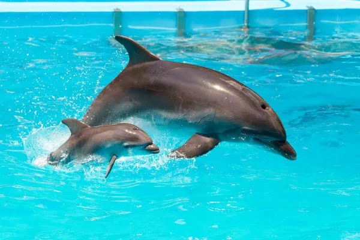

| Quais são os planetas do planeta Terra?
Atualmente, ele é formado por oito planetas, sendo eles: Mercúrio, Vênus, Terra, Marte, Júpiter, Saturno, Urano e Netuno. Os chamados planetas rochosos, mais próximos do Sol, são formados predominantemente por rochas. |
 |
|